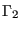
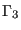
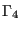
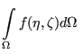

Next: Fluid Section Types: Gases
Up: Beam Section Types
Previous: Box
Contents
The general section can only be used for user element type U1 and is defined
by the following properties (to be given by the user in that order):
- cross section area A
- moment of inertia 
- moment of inertia 
- moment of inertia 
- Timoshenko shear coefficient 
Furthermore, the specification of the 1-direction (cf. third line in the
*BEAM SECTION definition) is REQUIRED for this type of
section. Internally, the properties are stored in the prop-array in the
following order:
- cross section area A
- moment of inertia
- moment of inertia
- moment of inertia
- Timoshenko shear coefficient
- global x-coordinate of a unit vector in 1-direction
- global y-coordinate of a unit vector in 1-direction
- global z-coordinate of a unit vector in 1-direction
- offset1
- offset2
In the present implementation of the U1-type element , offset1 and
offset2 have to be zero.
guido dhondt
2018-12-15